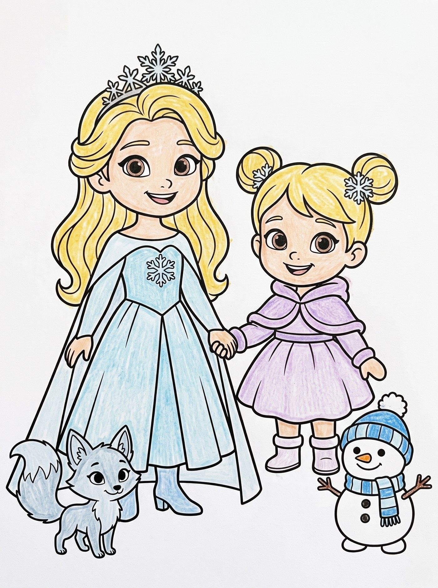
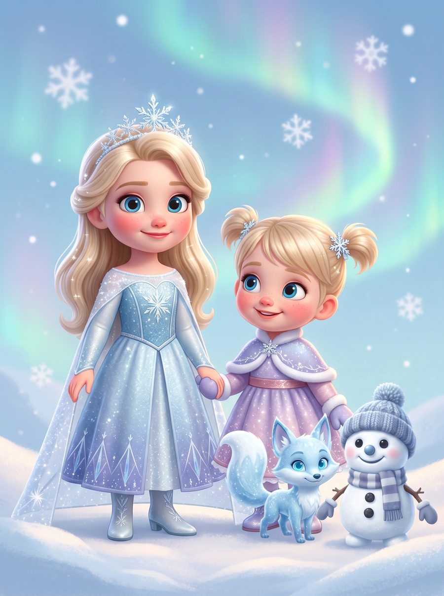
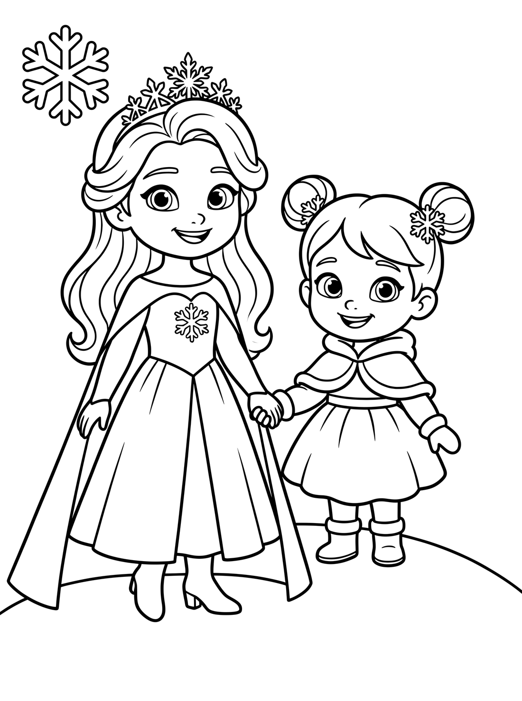
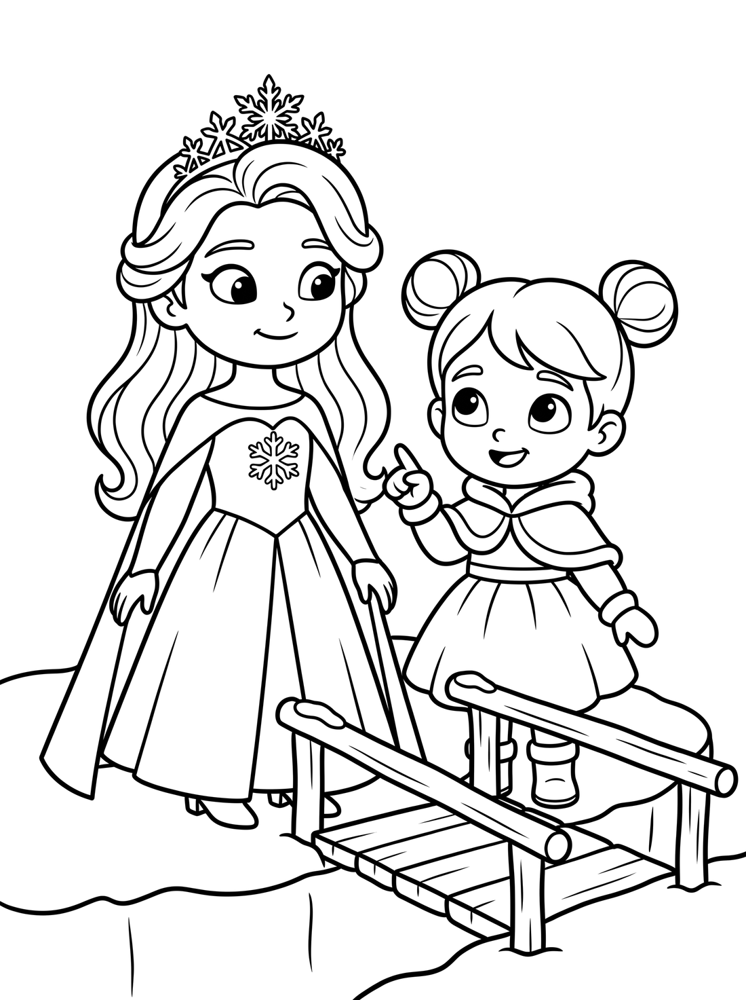
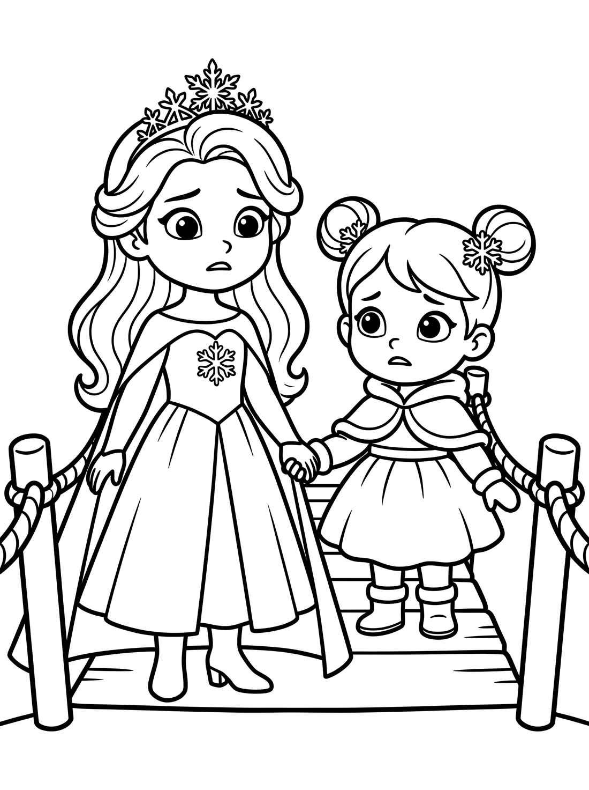
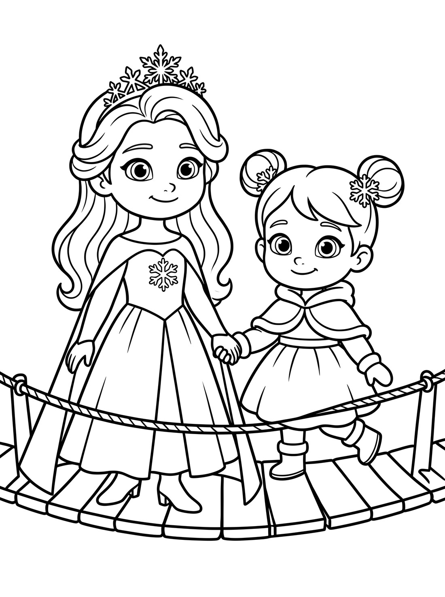
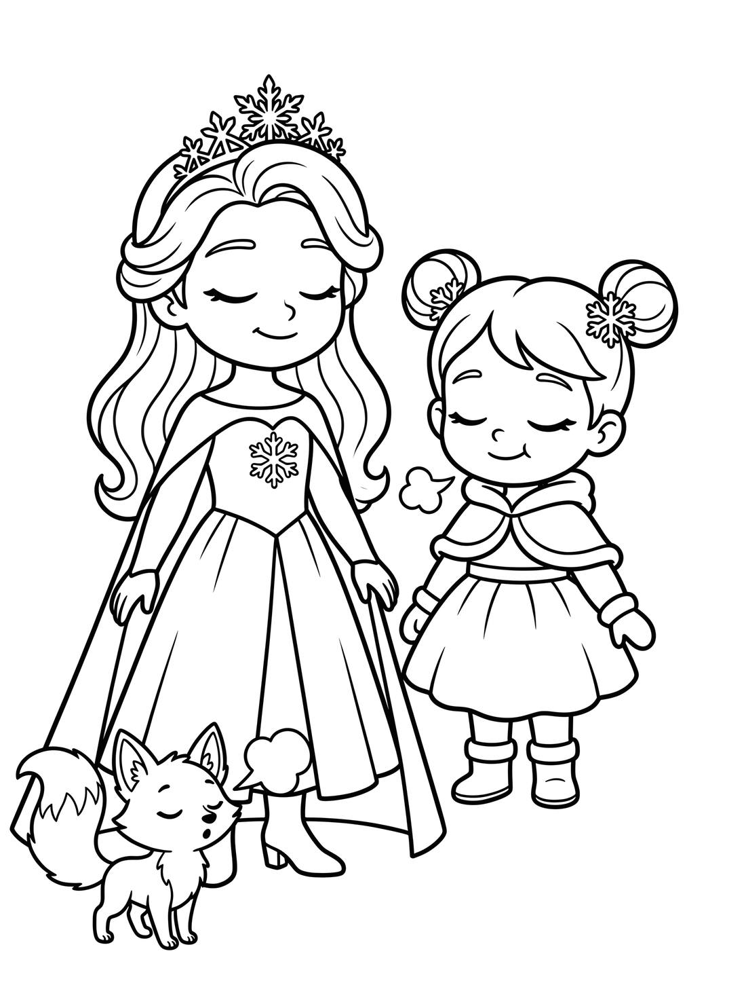
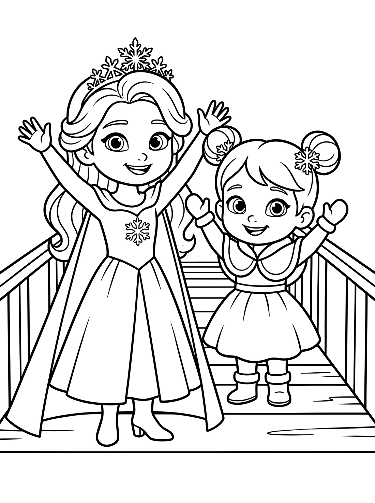

Being brave has never meant not being scared. Bravery is feeling the wobble and taking one small step anyway — and that is something even the youngest children can learn. When your child feels scared, don’t brush the feeling aside or rush to fix it. Let them feel it, name it with them, and stay close and calm. Help them break the hard thing into one small step, and then the next; a slow, calming breath helps too. Remind them of the times they’ve been brave before, and praise the trying, not the not-being-scared. Children grow braver by doing, with you beside them — not by having the challenge taken away.
(Full note prints on the back page. Written in the register of the When I feel Afraid note William shared.)